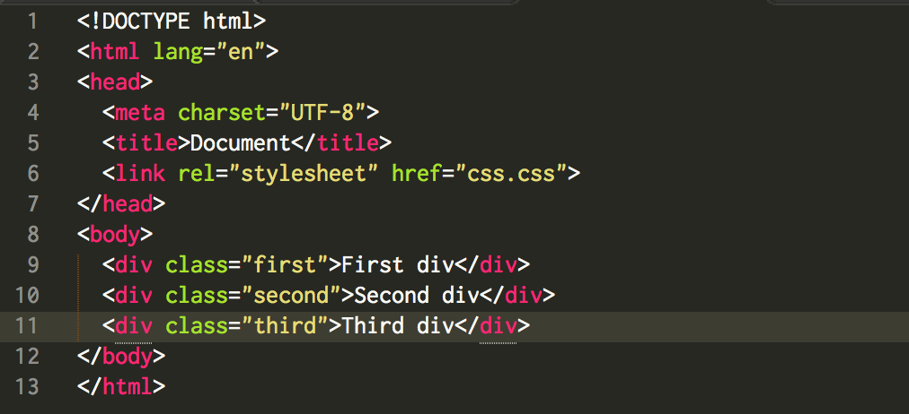
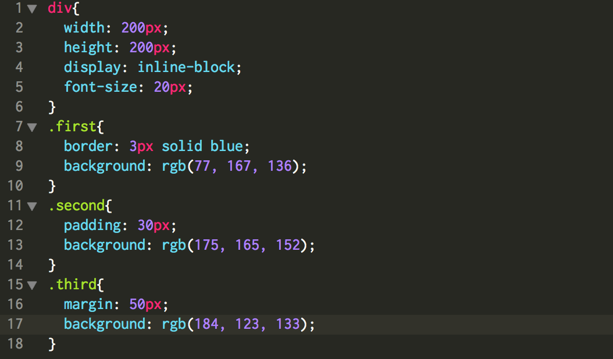
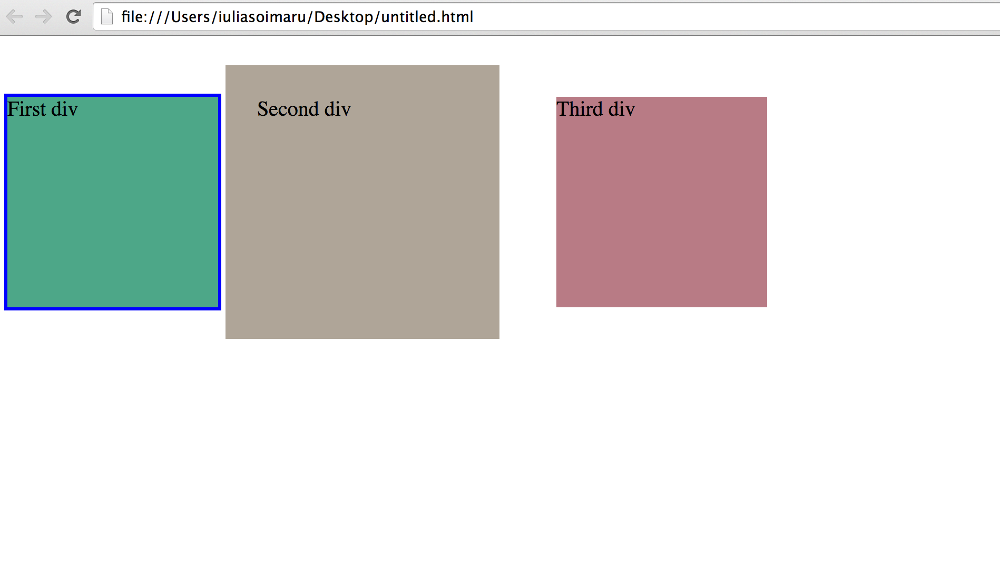
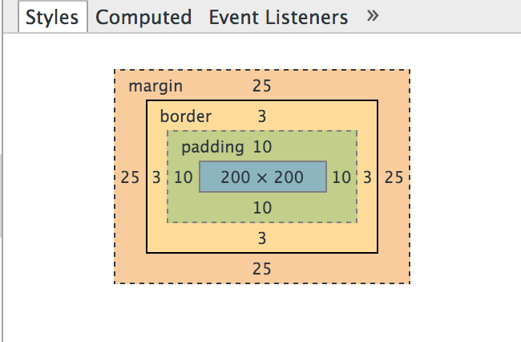

Hi everyone, this blog post is about some CSS styles that I have learnt on my second wee at DevBootcamp.
First I want to write a little bit about what actually CSS is.
CSS (Cascading Style Sheets) - is a style sheet language that people use to describe the look of a document written in HTML (HyperText Markup Language). So in simple words HTML is like a skeleton of the page, where using different tags we write the structure of our web page, and CSS is a style sheet that helps us to change colors, position, length and height, font and a lot of other things of our blocks from the web page.
Let’s take a look of some CSS styles, and difference between them.
1) What is a difference between Border, Padding and Margin?
Here is an example of very simple HTML and CSS code:
HTML

CSS

And here is what we see on the screen:

-First div has a border. Border is a frame around our block, I would say Border goes outside of our block. If we have width: 200px; after adding border: 3px; at the exit we will have width: 206px. Border has 3 characteristics: width, style, color. You can add border to all sides of the div, and add to the specific side like border-left or border-bottom as well.
-Second div has padding. Padding is a space between content and border area. If we have width: 200px; after adding padding: 30px; at the exit we will have width: 260px. By default padding is set to zero. You can add padding to all sides of the div writing (padding: 30px); or you can specify the side (padding-right: 30px).
-Third div has margin. Margin is a space between content. If we have width: 200px; after adding margin: 50px; at the exit we will have width: 200px, but our element will move 50px from the top, and 50px from the left side element, and if we add more content this div will always has a distance around it 50px. You can add margin to all sides of the div writing (margin: 50px); or you can specify the side (margin-right: 50px). And I want to mention about margin: auto, it is a style that helps to horizontally center that element within its container.
So here is an image where you can see what goes after our content. We can find that first around our block is padding (inside our div), then goes border (outside of our div), and then margin (distance between other content).

2) What are the differences between relative, absolute, and fixed positioning?
An important concept to understand first is that every single element on a web page is a block. You set the element to display: block; or if that element is by default display: block; This means you can set a width and a height and that element will respect that. And know we will talk about positioning of these elements.
Position: static - is a default value. It means that the element will flow into the page as it normally would. Since it goes by default, it is very rare in use.
Position: relative - means block is positioned relative to itself. If you just set this position, and don’t add top, left, right and bottom values nothing will be changed, it will look like static. But if you do change these values, you will see how the block is moving on the page.
Position: absolute - means block is positioned absolute to his parent. If absolute positioned div doesn’t have parent, it will be the same as relative positioned block. When you add top, left, right and bottom values it will move depending of the window. But if this div has parent, it will move depending of it’s parent.
Position: fixed - means that block is positioned relative to its viewport. The viewport doesn’t changed even when you scroll the page, you will always see “fixed” block on the place where you put it. The perfect use is when you have left sidebar menu that people can see on your website walking to the down of the page.
Thank you for attention. Feel free to shoot me an e-mail if you have any questions or comments about this blogpost.